Casos de COVID-19 en JUNIN / JAUJA por Distrito
Tome en cuenta que es común tener casos reportados en un distrito donde personas no viven a veces causando resultados exageradamente alto o bajo y sesgos en los datos. Por eso, interprete los resultados como tendencias del distrito y sus distritos cercanos.
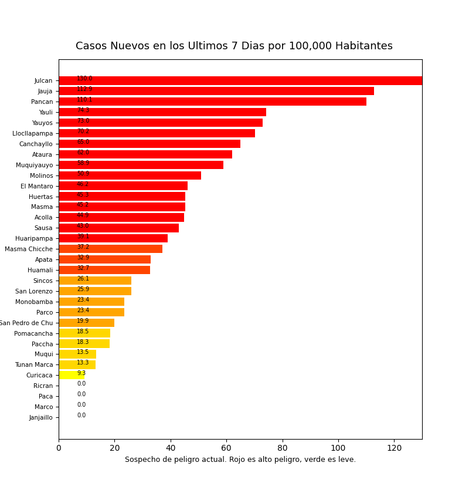
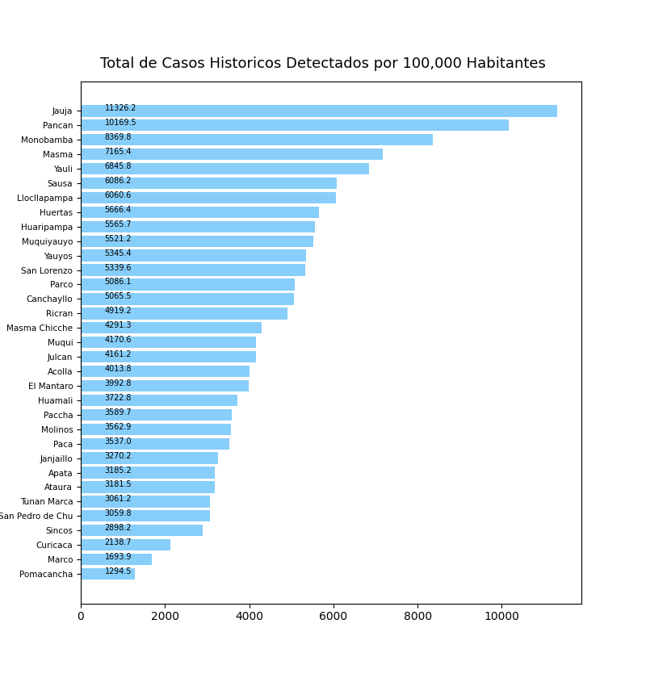
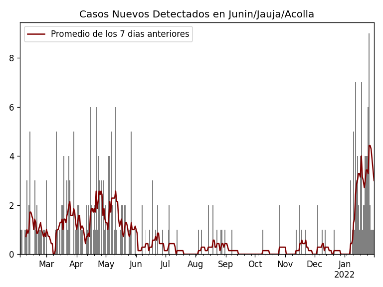
 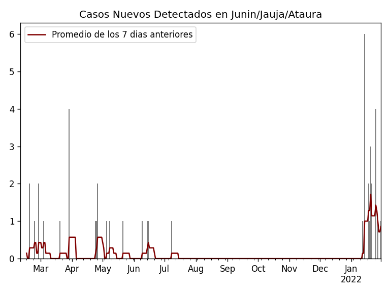
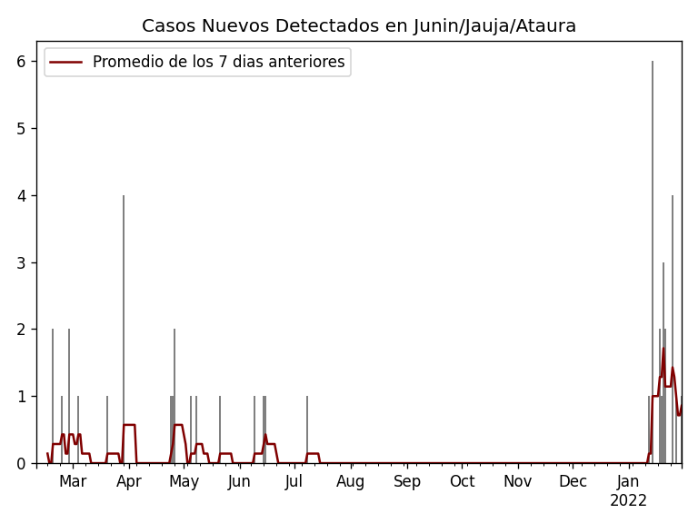


 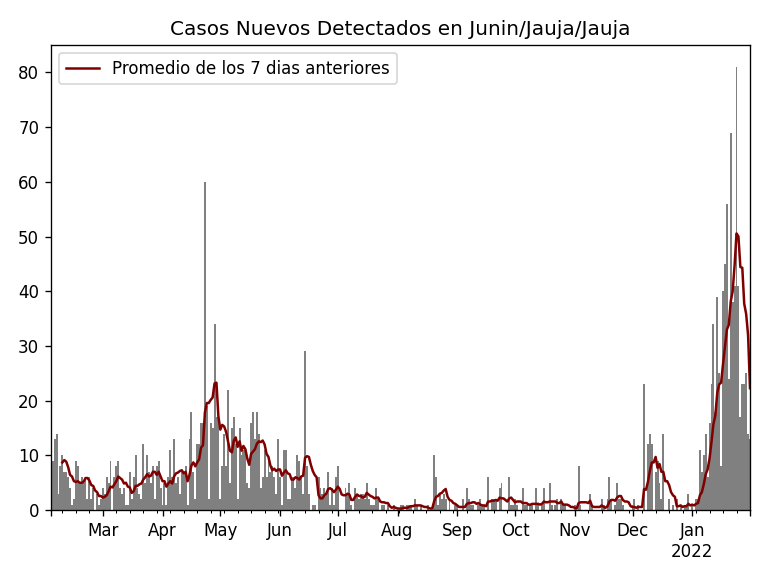
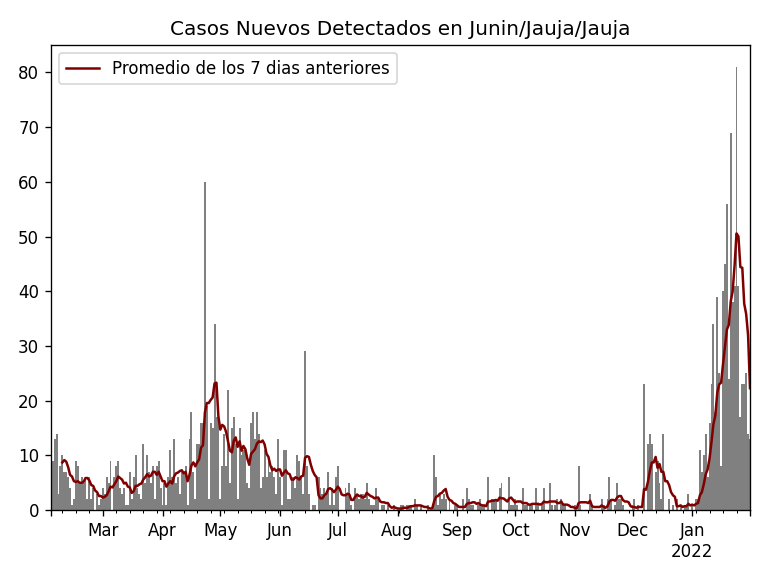
 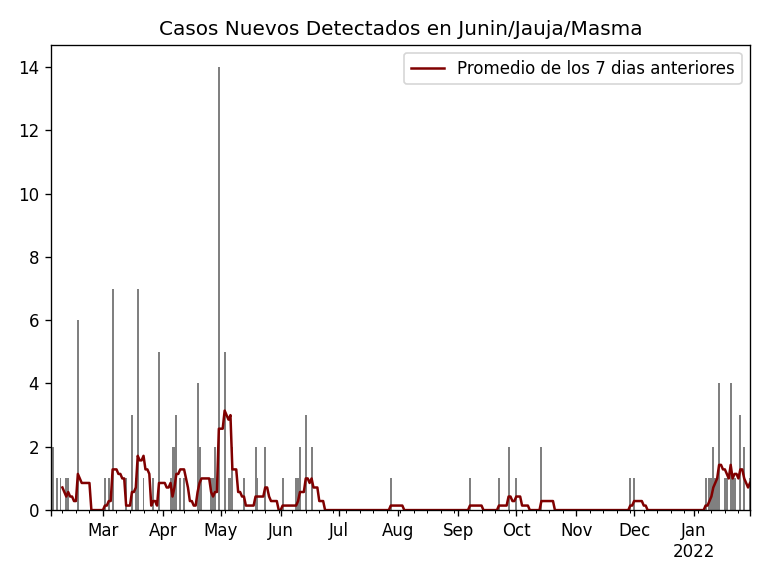
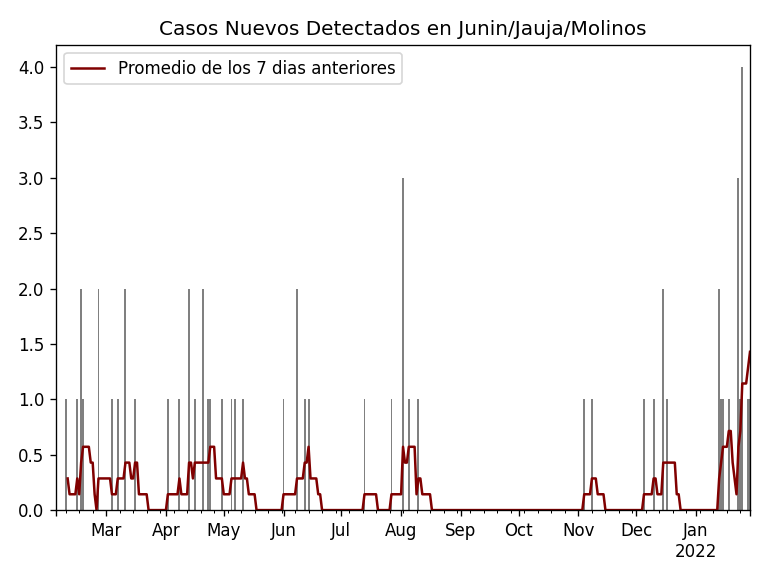
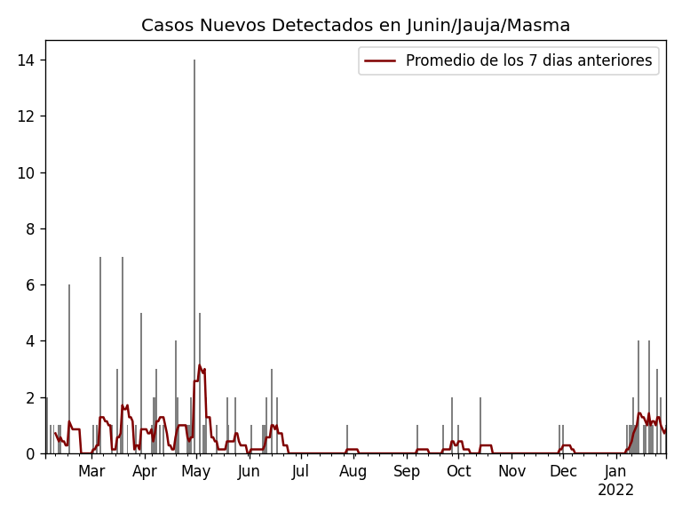
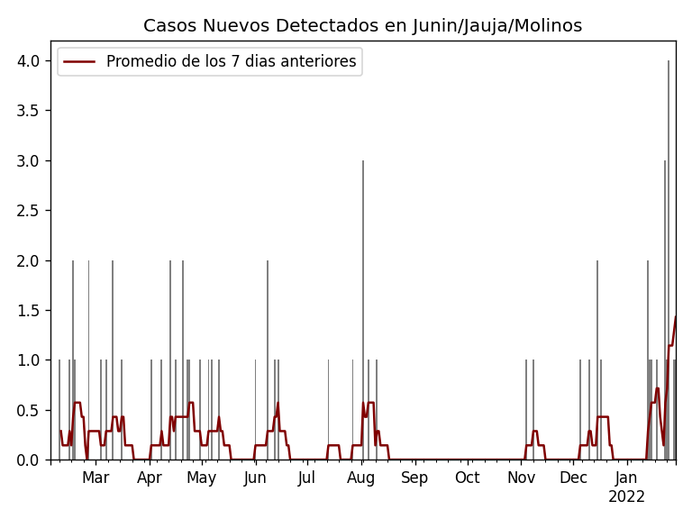

 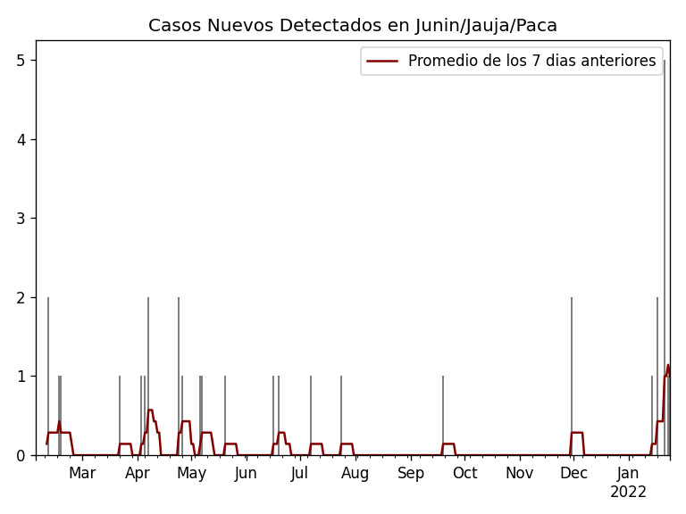
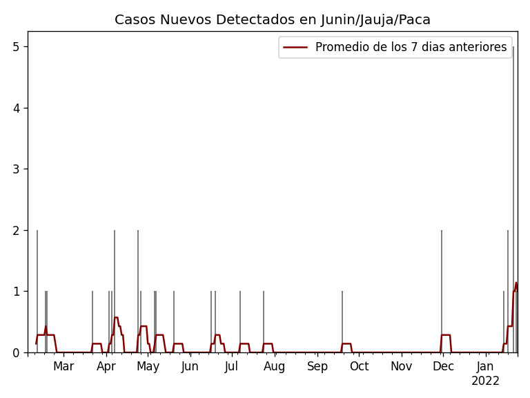
 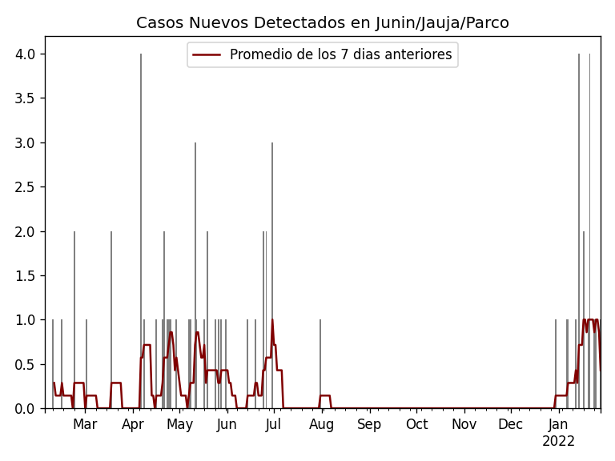
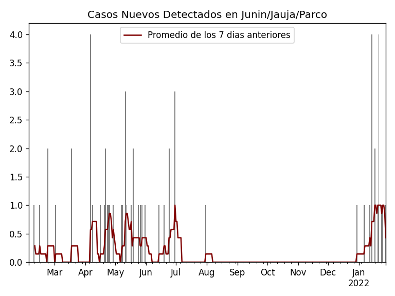

 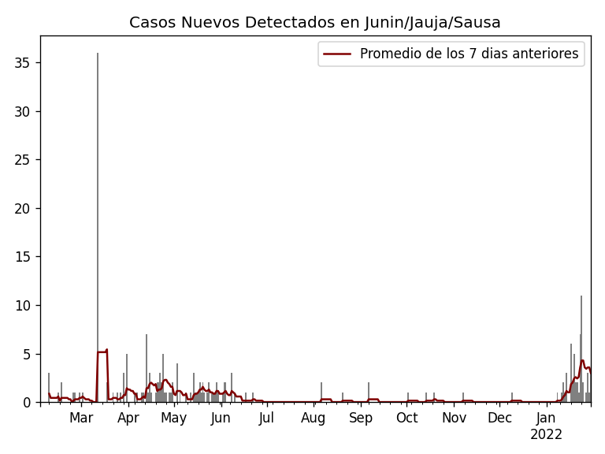
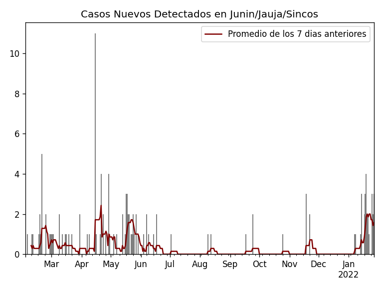
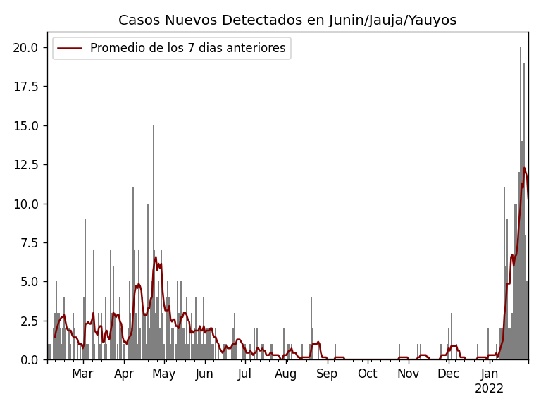
Fuente de los datos utilizados: Instituto Nacional de Salud y Centro Nacional de Epidemiologia, prevención y Control de Enfermedades – MINSA.
Datos Demograficos Utilizado
Fuente del codigo usado para generar este sitio web.
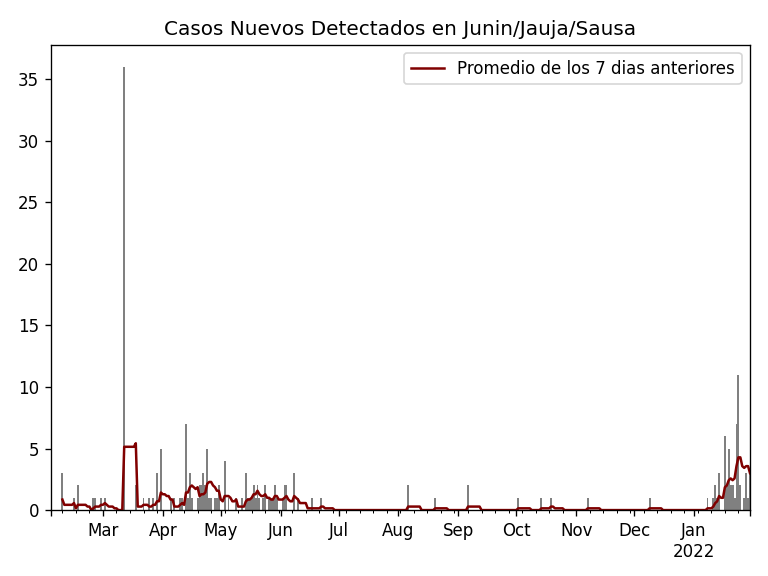
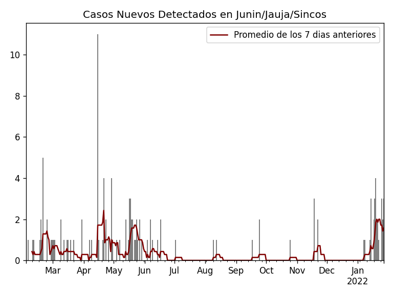
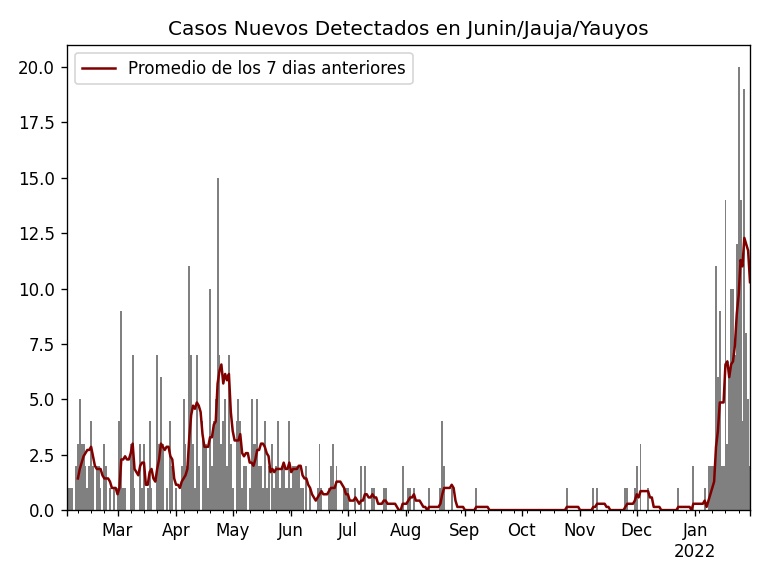
Fuente de los datos utilizados: Instituto Nacional de Salud y Centro Nacional de Epidemiologia, prevención y Control de Enfermedades – MINSA.
Datos Demograficos Utilizado
Fuente del codigo usado para generar este sitio web.